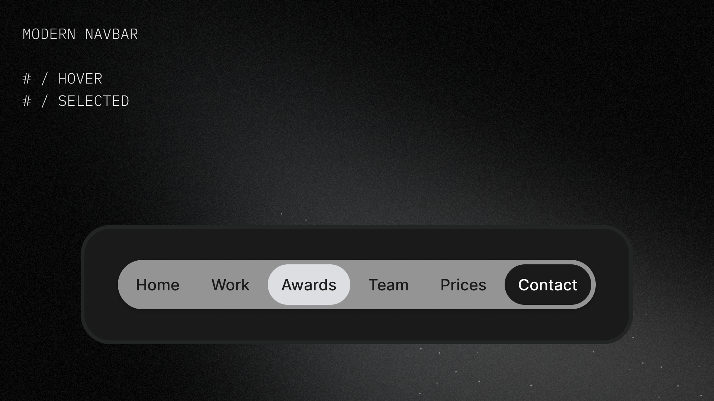
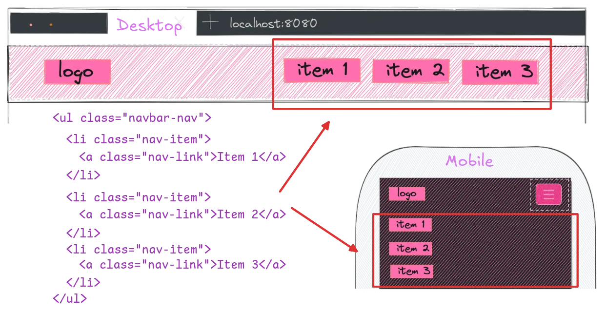
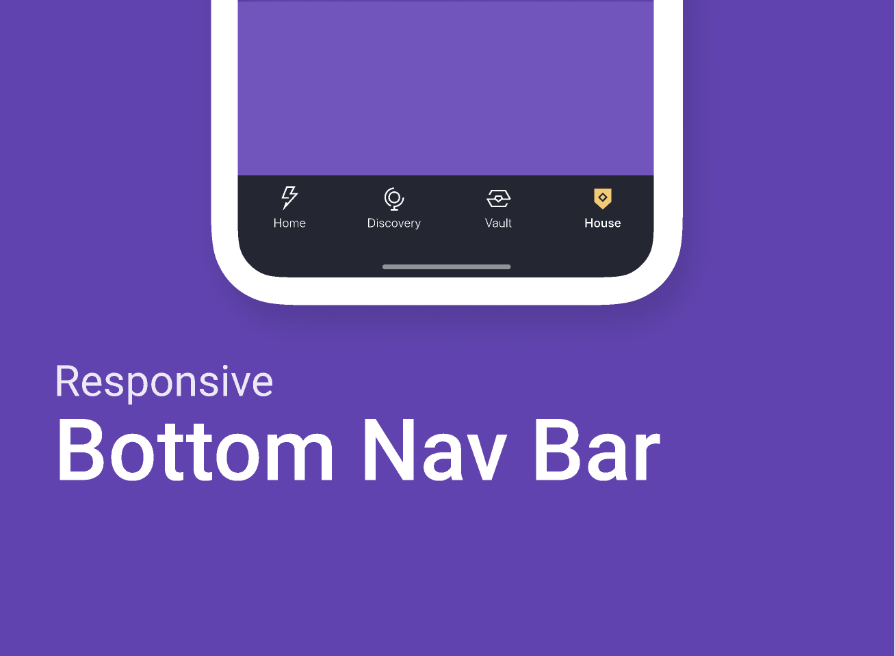
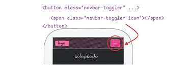
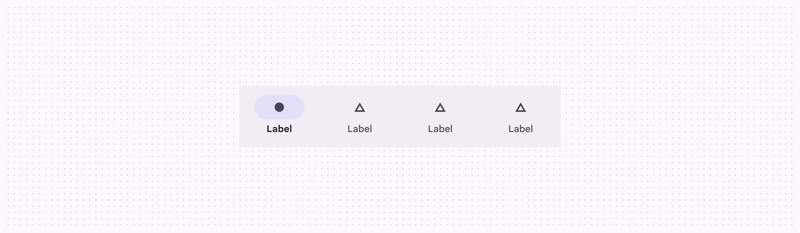

Es un componente de UI que permite la navegación entre los distintos sectores de tu aplicación o sitio web. Debe ser responsiva y rápida.
ANATOMÍA DE UNA NAVBAR
La barra de navegación es el nodo central de cualquier interfaz. En un entorno digital, su eficiencia determina la velocidad de transferencia del usuario.
¿Qué es?

Jerarquía de Elementos

Una navbar efectiva debe priorizar el flujo de datos. Se recomienda seguir este orden lógico:
- Identidad (Logo): El punto de origen del usuario.
- Navegación Principal: Enlaces directos a módulos críticos.
- Acciones de Usuario: Botones de login, perfil o estado de sistema.
Patrones de Navegación

Dependiendo del volumen de información, se aplican distintos patrones estructurales:
- Horizontal (Top Bar): Ideal para sitios con pocos enlaces principales.
- Menú Hamburguesa (Drawer): Utilizado para colapsar opciones en vistas móviles.
- Sticky Navigation: Mantiene la barra fija durante el scroll.
Estados del Componente

Una navbar funcional debe comunicar estados claros al usuario:
- Default: Estado inicial sin interacción.
- Hover/Active: Cambio visual al interactuar.
- Disabled: Módulos restringidos.
Accesibilidad y Semántica

Un sistema robusto debe ser interpretable por cualquier agente de usuario:
- Uso de ARIA: Implementar
aria-label. - Navegación por Teclado: Accesibilidad mediante Tab.
- Contraste: Legibilidad absoluta.
Ejemplos Funcionales
Efectos Visuales y Feedback
El feedback visual es vital para informar sobre la interactividad del componente sin sacrificar el rendimiento.